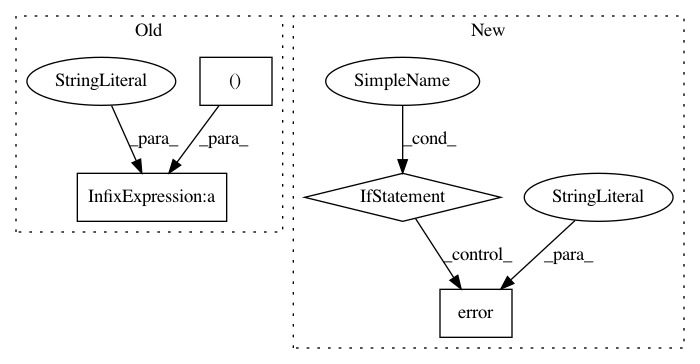

aee98cea97ea0fb49f053c2212e9294dd121ca1b,perfkitbenchmarker/providers/gcp/gce_virtual_machine.py,GceVirtualMachine,UpdateInterruptibleVmStatus,#GceVirtualMachine#,775
Before Change
vm_without_zone.zone = None
gcloud_command = util.GcloudCommand(vm_without_zone, "compute",
"operations", "list")
gcloud_command.flags["filter"] = "zone:%s targetLink.scope():%s" % (
self.zone, self.name)
gcloud_command.additional_flags.append("--log-http")
stdout, _, _ = gcloud_command.Issue()
self.early_termination = any(
operation["operationType"] == "compute.instances.preempted"
After Change
if self.preemptible:
stdout, stderr, return_code = self.RemoteCommandWithReturnCode(
_CHECK_INTERRUPT_CMD)
if return_code:
logging.error("Checking Interrupt Error: %s", stderr)
else:
self.spot_early_termination = stdout.strip() == _SHUTDOWN_MARKER
def IsInterruptible(self):
Returns whether this vm is an interruptible vm (spot vm).
Returns: True if this vm is an interruptible vm (spot vm).
In pattern: SUPERPATTERN
Frequency: 3
Non-data size: 4
Instances
Project Name: GoogleCloudPlatform/PerfKitBenchmarker
Commit Name: aee98cea97ea0fb49f053c2212e9294dd121ca1b
Time: 2020-06-24
Author: tohaowu@google.com
File Name: perfkitbenchmarker/providers/gcp/gce_virtual_machine.py
Class Name: GceVirtualMachine
Method Name: UpdateInterruptibleVmStatus
Project Name: home-assistant/home-assistant
Commit Name: 2a210607d392cac85bb82dd576877ddb192c85c5
Time: 2018-08-16
Author: prokhorov.max@outlook.com
File Name: homeassistant/components/wemo.py
Class Name:
Method Name: setup
Project Name: ncoudray/DeepPATH
Commit Name: 64c0ea557df21a7585f6fd0fef9d1b0c20f2da3d
Time: 2019-11-19
Author: coudrn01@bigpurple-ln2.cm.cluster
File Name: DeepPATH_code/00_preprocessing/0b_tileLoop_deepzoom4.py
Class Name:
Method Name: